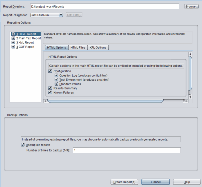

To minimize the chance of creating reports with configuration
values that are inconsistent with the test results, either create reports
after running the tests or use different work directories
for different configurations.
To minimize the chance of creating reports with configuration
values that are inconsistent with the test results, either create reports
after running the tests or use different work directories
for different configurations.The harness does not automatically create reports of test results after a test run. You must create test reports either from the harness GUI or from the command line in batch mode (see Writing Reports in the Command-Line Interface User's Guide).
Reports might contain configuration values as well as test results. To ensure that any configuration values printed in reports are those that were used to run the tests, observe the following precautions after running tests for which you intend to generate one or more reports:
Do not change any values in the current configuration.
Do not load a different configuration into the work directory.
To minimize the chance of creating reports with configuration
values that are inconsistent with the test results, either create reports
after running the tests or use different work directories
for different configurations.
To create a test report from the harness GUI, complete these steps:
Choose Report > Create Report from the Test Manager menu bar. The harness opens the Create a New Report dialog box.

Type the name of a report directory in the Report Directory field or click the Browse button to specify where to put the new reports.
You can either specify a new directory or an existing directory. If you ran reports earlier, the Report Directory field displays the directory from the previous run. If you use an existing report directory, the harness can save the previous reports as backups when it writes the new reports. Use the settings in the Backup Options pane to backup old reports and specify the number of backup reports to keep in the report directory.
The "Report Results for" drop down specifies the filter used to select the test results that are reported. You can choose Last Test Run, Current Configuration, All Tests, Custom, or Certification. If the Custom filter was previously renamed, the dialog box displays the current name of the custom filter. You can create or modify a custom filter for generating test reports for a specific set of test criteria.
See Using View Filters for a description of the filters. See Custom View Filter for a description of how to create a custom view filter.
Check "Backup Options settings" to enable the report backup option, and specify the number of backups preserved.
When "Backup old reports" is enabled, the harness saves the previous reports by appending a tilde and a sequential number to the existing directory names (such as html~1~). This effectively moves them out of the way, making way for the new report(s). The links inside the backup index.html file are rewritten to refer to the correct (renamed) subdirectory name. For example, a report directory with one backup would look like:
html/ html~1~/ index.html index.html~1~ reportdir.dat text/ text~1~/ |
The harness maintains the specified number of backup copies by deleting the oldest copy when the limit of backups is reached for a specific report. Changing this or any other setting in the report dialog box does not affect any previously saved backup reports. Existing backups are not deleted if backups are turned off.
The harness backs up the entire set of reports. If the first set of reports included HTML, Text, XML, and COF formats, and the next set of reports are generated in XML format only, the harness creates backups of the previous reports (appending the appropriate tilde and sequence number to the backup directory name). The harness generates the new top-level index.html file and updates its hyperlinks to maintain a self-consistent backup report set.
In the left column, choose the report format(s) to be generated by the harness. The options set in this dialog are persistent. Once set, they are used each time a report is generated. These settings also apply to reports printed from the command-line interface.
HTML Report: An HTML report showing configuration information, a result summary, and environment values. See HTML Options and KFL Options.
Plain Text Report: A text report showing only the test names and their result status. If the configuration names at least one known failures list, known failure analysis reports are also created.
XML Report: An XML report containing configuration information, a result summary, and all result data for each test. This report is versatile - it can be used as input to Merge Reports and can be converted to other report formats. However, the file can be larger and slower to generate than other formats.
COF Report: The report browser displays a cof.xml hyperlink to the COF report page, which contains a report in the COF format. COF is an extensive XML format containing environment, configuration and test result data.
Click the Create Report(s) button.
The harness writes the reports and displays a dialog box that gives you the option of either viewing the new reports in the report browser or returning to the Test Manager window.
If you selected HTML Report in the Report Formats list, use the HTML Options tab to select the sections of the main HTML report file that are generated.
The following options are available for generating HTML reports:
Configuration - Selecting this option enables all of the following subordinate options:
Question Log - Generates a report that is the equivalent of the Configuration Question Log.
Test Environment - Generates a report that is the equivalent of the Show Environment dialog box.
Standard Values - Generates a report that contains the values from the Quick Set Mode.
Results Summary - Generates a report of the pass, Fail, Error, Not Run, and Total values. The HTML report provides hyperlinks to content in the other HTML files. If it is not selected, the hyperlinks are not generated.
Known Failures - Generate a report of known failures, based on one or more Known Failures List (KFL) files. When the value for "Specify a Known Failures List?" is set to Yes in the configuration editor, and one or more KFL files have been specified, the settings are stored in your user preferences and used as the default when the KFL option is selected.
Keyword Summary - Generates a report that provides a count of the number of occurrences of keywords that appeared in the selected tests.
Use the options on this tab to specify the content and the location of HTML reports. The main report is the home page for browsing HTML reports. It can be named report.html or index.html. The main report contains hyperlinks to the extra files you choose to generate. The extra files you can choose are as follows:
Passed Tests (passed.html): Tests that were executed during the test run
and passed.
Failed Tests (failed.html): Tests that were executed during the test run
but failed.
Error Tests (error.html): Tests that had errors and could not be run.
Not Run Tests (notrun.html): Tests that were not excluded from the test run but were not run.
The main report and any extra files are written to the location you specified in the Report Directory field.
Known failure list reports enrich the reporting output so you can monitor the status of certain tests across test runs. This section describes how to create and use a known failures list and discusses KFL reports and the Known Failure Analysis.
A known failures list (KFL) is list of tests or test cases that are known to fail. Its purpose is to provide failure data for reporting, so that failure behavior can be tracked over time. Using a known failures list is optional and the feature is off by default. To activate the feature, answer yes to the "Specify a Known Failures List?" question in the configuration editor.
Once KFL files have been specified, (see Creating a Known Failures List and Specifying a Known Failures List) you can choose the Known Failures option in the HTML Options tab. This enables Known Failure Analysis options on the KFL Options tab. Options you check on this tab are preserved as preferences for future reports. This is true if reports are launched from the user interface or the command line.
Reporting Options:
Check for test discrepancies. This feature is No by default. To activate this option, choose it in the user interface.
Optional files/sections to generate:
These options are set to Yes by default.
List tests which are expected to fail and are still failing. See Old Failures (kfl_fail2fail.html).
List tests which were expect to fail but resulted in error instead. See Unexpected Error (kfl_fail2error.html).
Report on tests in KFL which are now missing.
Any generated data is added to the Known Failure Analysis which is found towards the end of the HTML report (report.html and/or index.html). It is a summary of various comparisons between the selected result set (Current Configuration, Last Test Run, etcetera) and the items listed in the KFLs provided in the configuration.
The KFL is a text file with the extension .kfl.
The KFL file name or its path must not begin with a dash "-" or contain spaces. As described in
Specifying Known Failures Lists With kfl in the Command-Line Interface User's Guide, a space is a separator on the command line, therefore file path arguments such as C:\Program Files\myconfig\foobar do not work.
The .kfl file lists one test or test case per line. You have the option of specifying a bug ID following the test name (a space separator is required). Use # for comments. For example:
# Demo.kfl lists/DoublyLinkedList/insertTest.html 0000123 BigNum/subtractTest.html 0000456 BigNum/compareTest.html 0000789
If you provide a bug prefix URL, that ID will be appended to that address, creating a convenient link in your report. To specify the bug prefix URL, select File > Preferences. Under Test Manager, select Reporting, and specify the URL.
This feature does not validate the URL or perform any processing.
Follow these steps to use one or more known failure lists to add failure analysis data to HTML reports.
From the configuration editor, select Configure > Edit Configuration.
Under Parameters, select "Specify a Known Failures List?" and choose Yes. Once Yes is chosen the parameter "Specify Known Failures List Files" is active.
Choose one or more KFL files, as described in the configuration editor's KnownFailuresListInterview.
The files you choose are stored in your user preferences and are considered the defaults.If you have specified KFL files in the configuration editor it's preferable to modify the list using the configuration editor. If you want to modify the list of KFL files from the command line, See Specifying Known Failures Lists with kfl in the Command Line Interface User's Guide.
If you specified a known failures list in the configuration editor, the HTML report will include a section titled Known Failure Analysis. When you create a report you can check the HTML Option "Known Failures" to create the New Passed, Missing (not run), and New Failures reports. The options on the KFL Options tab generate reports for New Passed, Missing (test not found) and Old Failures.
The Known Failure Analysis table in the HTML report attempts to describe the differences found in the set of results being analyzed versus what you provided in the KFL. The KFL is the set of expected failures of tests and test cases; if they did not fail in the current set of results, that is considered a discrepancy. This is a sample table:
The headers Tests (#) and Test Cases (#) contain a number representing the number of discrepancies found in that column. The numbers below that header should add up to that number (except the Old Failures do not count as a discrepancy).
The Known Failure Analysis table contains numbers linked to each of the report categories below. If the number is clicked, the user is taken to a file which has details - basically the information you'd find in the KFL file. The test name or test case name and the associated bug IDs. The test names are hyperlinked to the JTR result file in the work directory and the bug ids are hyperlinked if the bug URL preference is set in the Test Manager Preferences (as described in Reporting).
A test or test case in the current set of results has a Passed status, when it was expected to fail.
Sample scenario:
A product under development has a defect described in bug 1234, which exists in builds 1-5. The quality department now expects an error in test abc123 whenever the tests are run against the product, and has put test abc123 on the known failures list (KFL).
Build 6 arrives and test abc123 now passes because the defect has been fixed.
By looking at this Fail to Pass section of the report, the quality department will see test abc123 listed and investigate the reason this test is suddenly passing.
After confirming the fix, a typical action would be to remove test abc123 from the KFL.
A test or test case in the current set of results has an Error state, but it was expected to Fail. An Error usually indicates some sort of problem executing the test. Investigate items in this category to see why they resulted in an Error rather than a simple Pass or Fail.
For some reason the test on the KFL was not run in the set of results being reported. It may not indicate a problem if a partial set of results is being analyzed, or if the KFL contains a wide set of tests, all of which would never appear in a single set of results.
The results for a test listed in the KFL are missing. Because the test was listed in the KFL, it was expected to exist and Fail. A missing test may not indicate a problem, but should be investigated. This section can be disabled by deselecting the appropriate option in the HTML KFL report options in the Create Report dialog.
Any test or test case which has a Failed status in the current results but does not appear in the KFL.
The lists of tests and test cases which failed and were expected to fail. This is not a discrepancy and is provided for informational purposes.
Error results present in the results being reported upon, which do not correspond to any entries on the KFL list(s) supplied. This is a convenience listing so that errors can be examined at the same time as known failure list discrepancies.
The possible contents of the report directory are as follows:
index.html
/html
config.html
env.html
error.html
error_gr.html
excluded.html
failed.html
failed_gr.html
kfl_fail2error.html
kfl_fail2fail.html
kfl_fail2missing.html
kfl_fail2notrun.html
kfl_fail2pass.html
kfl_newfailures.html
kfl_otherErrors.html
kfl_tc_fail2error.html
kfl_tc_fail2missing.html
kfl_tc_fail2notrun.html
kfl_tc_fail2pass.html
kfl_tc_newfailures.html
notRun.html
passed.html
passed_gr.html
report.css
report.html
/text
summary.txt
/xml
report.xml
In the html directory, the KFL report file names correspond to the KFL reports as follows:
| HTML Report | File Names |
|---|---|
| New Passed | kfl_fail2pass.html, kfl_tc_fail2pass.html |
| Unexpected Error | kfl_fail2error.html, kfl_tc_fail2error.html |
| Missing (Not run) | kfl_fail2notrun.html, kfl_tc_fail2notrun.html |
| Missing (test not found) | kfl_fail2missing.html, kfl_tc_fail2missing.html |
| New Failures | kfl_newfailures.html, kfl_tc_newfailures.html |
| Old Failures | kfl_fail2fail.html, kfl_tc_fail2fail.html |
A plain text report directory contains a text/ directory which contains the main text report, summary.txt.
If the configuration associated with the work directory names at least one known failures list (KFL) file, the text/ directory contains the additional known failure analysis files listed here:
| Text Report | File Names |
|---|---|
| New Passed | kfl_fail2pass.txt, kfl_tc_fail2pass.txt |
| Unexpected Error | kfl_fail2error.txt, kfl_tc_fail2error.txt |
| Missing (Not run) | kfl_fail2notrun.txt, kfl_tc_fail2notrun.txt |
| Missing (test not found) | kfl_fail2missing.txt, kfl_tc_fail2missing.txt |
| New Failures | kfl_newfailures.txt, kfl_tc_newfailures.txt |
| Old Failures | kfl_fail2fail.txt, kfl_tc_fail2fail.txt |
The files whose names begin with tc_ are present only if the test suite supports test case identification.
Copyright © 2002, 2014, Oracle and/or its affiliates. All rights reserved.